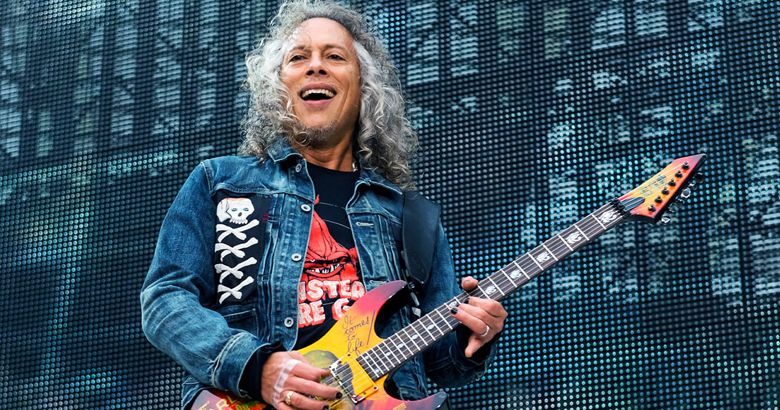

Kirk Hammetts
Kirk Lee Hammett (San Francisco, California, 18 de noviembre de 1962) es un guitarrista estadounidense, actualmente miembro de la banda de thrash metal Metallica. Está considerado como el noveno mejor guitarrista del momento según la revista Total Guitar y número 11 según una lista de la revista Rolling Stone seleccionada en 2003 por David Fricke, colaborador de la misma.